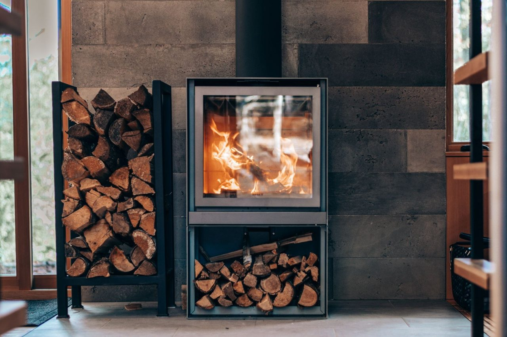
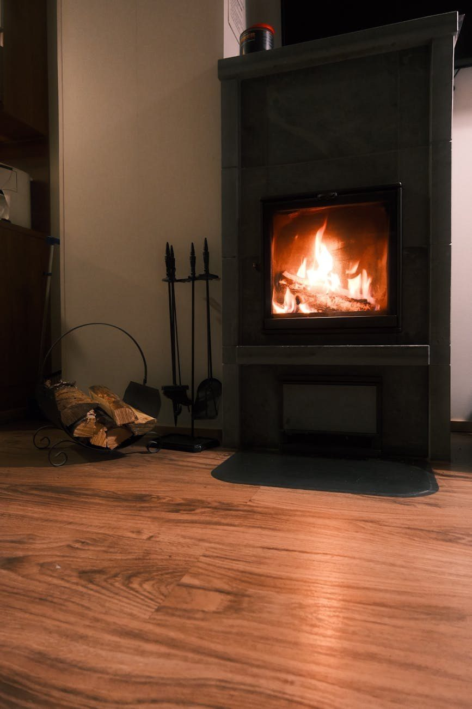
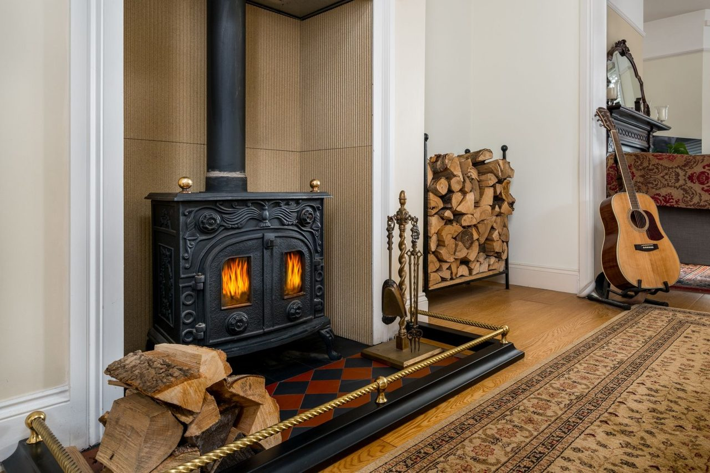
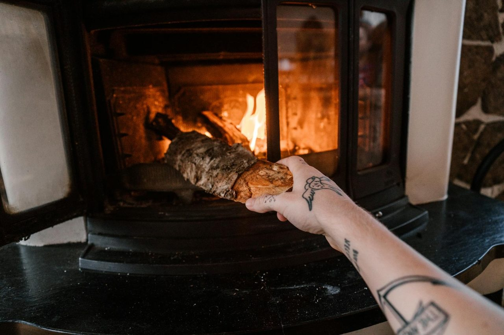
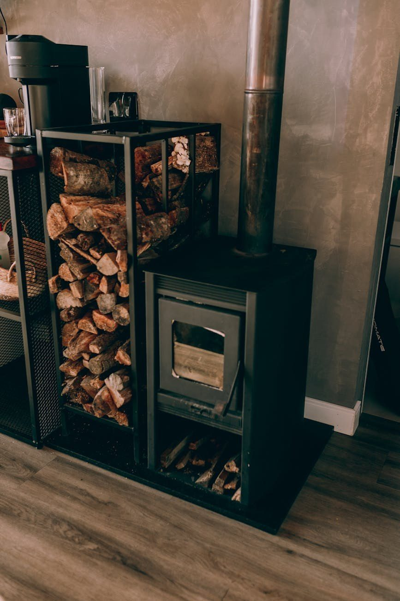

Kamin- & Ofenhandel · Schwülper
Wärme, die
man sieht.
Kaminöfen, Zubehör und Schornsteine — ausgesucht und persönlich beraten von Frank Dörner. Besuchen Sie unseren Ausstellungsraum.

01 — Kaminöfen
„Ein guter Ofen ist mehr als Wärme — er ist der Mittelpunkt eines Raums."
Vom klaren Stahlofen bis zum wärmespeichernden Speckstein: In unserer Ausstellung finden Sie Kaminöfen, die zu Ihrem Raum und Ihrem Heizverhalten passen — darunter Markenöfen u. a. von Lotus. Wir beraten Sie ehrlich, welcher Ofen wirklich zu Ihnen passt.
- Stahlöfen — modern & schnell warm
- Specksteinöfen — speichern Wärme lange
- Gussöfen — robust & klassisch
- Kaminkassetten — für den offenen Kamin



02 — Zubehör
„Das richtige Zubehör macht aus Feuer ein Ritual."
Vom Kaminbesteck über Funkenschutz und Bodenplatten bis zu Ofenhandschuhen und Anzündern — bei uns bekommen Sie alles, was den Umgang mit dem Feuer sicher und schön macht. Passend zum Ofen, aus einer Hand.
- Kaminbesteck & Ascheeimer
- Funkenschutz & Bodenplatten
- Ofenhandschuhe & Anzünder
- Ersatzteile & Dichtungen

03 — Holzkörbe
„Trockenes Holz, griffbereit — so beginnt jeder gemütliche Abend."
Schöne Holzkörbe und Aufbewahrungen halten Ihr Brennholz trocken und griffbereit — und sehen dabei gut aus. Ob Metall, Leder oder Geflecht: Wir haben das passende Stück für Ihren Kamin.
04 — Schornsteine
„Sicher abgeführt, sauber verbrannt —
der Zug stimmt."
Edelstahl-Schornsteinsysteme und Sanierungen: Wir sorgen dafür, dass Ihr Ofen sicher und effizient zieht — von der Planung bis zum fertigen Anschluss, fachgerecht und sauber.
Beratung anfragen05 — Ausstellung
Sehen, anfassen, sich beraten lassen.
Unser Ausstellungsraum in Schwülper steht Ihnen Mittwoch bis Freitag von 16 bis 19 Uhr offen — weitere Termine gern nach Vereinbarung.
„Wir freuen uns auf Ihren Besuch.
Ihr Frank Dörner & Team."
KaminXpress ist ein inhabergeführter Kamin- und Ofenhandel in Schwülper. Hier berät Sie noch der Fachmann selbst — ohne Verkaufsdruck, dafür mit echtem Wissen rund ums Feuer.